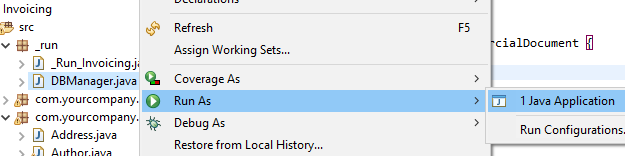

Lesson 4: Inheritance
Table of contents
Inheritance is a practical way to reuse code in the object oriented world. Using inheritance with JPA and OpenXava is as easy as using it in plain Java. We are going to use inheritance to remove repeated and boring code, like the UUID definition. Also, we'll add a new entity, Order, and we'll use inheritance to do it with minimal code. Moreover, you'll learn how practical it is to use inheritance even for the code used for testing.
Inheriting from a mapped superclass
The Author, Category and Invoice classes have some common code, the oid field definition:@Id @GeneratedValue(generator="system-uuid") @Hidden
@GenericGenerator(name="system-uuid", strategy="uuid")
@Column(length=32)
private String oid;
public String getOid() {
return oid;
}
public void setOid(String oid) {
this.oid = oid;
}
An elegant solution for this situation is inheritance. JPA allows you to exploit the concept of inheritance. One of them is to inherit from a mapped superclass. A mapped superclass is a Java class with JPA mapping annotations, but it is not an entity itself. Its only goal is to be used as superclass for an entity. Let's use it, and you'll see its utility quickly.
First, we move this common piece of code to a class marked as @MappedSuperclass. We name it Identifiable:
package com.yourcompany.invoicing.model;
import javax.persistence.*;
import org.hibernate.annotations.*;
import org.openxava.annotations.*;
@MappedSuperclass // Marked as mapped superclass instead of entity
public class Identifiable {
@Id @GeneratedValue(generator="system-uuid") @Hidden
@GenericGenerator(name="system-uuid", strategy="uuid")
@Column(length=32)
private String oid; // Property definition includes OpenXava and JPA annotations
public String getOid() {
return oid;
}
public void setOid(String oid) {
this.oid = oid;
}
}
package com.yourcompany.invoicing.model;
import javax.persistence.*;
@Entity
public class Category extends Identifiable { // Extends from Identifiable
// so it does not need to have an id property
@Column(length=50)
private String description;
public void setDescription(String description) {
this.description = description;
}
public String getDescription() {
return description;
}
}
Now, you can apply this same refactoring to the Author and Invoice entities, moreover, from now on you'll extend most of your entities from the Identifiable mapped superclass.
We have created our own Identifiable class to see the advantage of using mapped superclasses, however OpenXava provides for you a ready to use Identifiable class that you can find in the org.openxava.model package. So in your next project you don't need to write the Identifiable class again, just use the one included in OpenXava.
You have learned that a mapped superclass is a regular class with JPA mapping annotations that you can use as a base class for your entities. Moreover, you have learned how to use mapped superclasses to simplify your code.
Entity inheritance
An entity may inherit from another entity. This entity inheritance is a useful tool to simplify your model. We are going to use it to add a new Order entity to your Invoicing application.New Order entity
We want to add a new concept to the Invoicing application, i. e., order. While an invoice is something you want to charge your customer, an order is something the customer has ordered from us. These two concepts are strongly related, because you will charge the things your customer has ordered from you, and you actually have served him.It would be nice to manage orders in your application, and to associate those orders with its corresponding invoices. Just as shown in the next UML diagram:

And with Java code:
@Entity
public class Invoice {
@OneToMany(mappedBy="invoice")
private Collection<Order> orders;
...
}
@Entity
public class Order {
@ManyToOne // Without lazy fetching (1)
private Invoice invoice;
...
}
What shape does Order have? Well, it has a customer, several detail lines with product and quantity, a year and a number, something like this:

Incidentally, this UML diagram is identical to the Invoice diagram. That is, to create your Order entity you can just copy and paste the Invoice class, and the work is done. But, wait a moment! “Copy and paste” is a mortal sin. So, we have to find a way to reuse Invoice code for Order.
CommercialDocument as an abstract entity
A practical way to reuse the code for Invoice and Order is by using inheritance, moreover it's an excellent opportunity to learn how easy it is to use inheritance with JPA and OpenXava.In most object oriented cultures you have to observe the is a rule. It means that we cannot do Invoice extends Order, because an Invoice is not an Order. The solution for this case is creating a base class for both Order and Invoice. We are going to call this class CommercialDocument.
Here you have the UML diagram for CommercialDocument:

And here you have the same idea expressed with Java:
public class CommercialDocument { ... }
public class Order extends CommercialDocument { ... }
public class Invoice extends CommercialDocument { ... }
abstract public class CommercialDocument // We add the abstract modifier
Invoice refactored to use inheritance
Now, you have to create the Invoice entity extending it from CommercialDocument. See the new Invoice code:package com.yourcompany.invoicing.model;
import javax.persistence.*;
@Entity
public class Invoice extends CommercialDocument {
}
This new code requires a slightly different database schema, now invoices and orders will be stored in the same table (the CommercialDocument table) using a discriminator column. Therefore you need to remove the old tables executing the next SQL statements:
DROP TABLE INVOICING.INVOICE_DETAILS;
DROP TABLE INVOICING.INVOICE;

Then:

Now you can execute the Invoice module and see it working in your browser. Also, execute the InvoiceTest. It must be green.
Creating Order using inheritance
Thanks to CommercialDocument creating the Order entity is dead easy. See the code:package com.yourcompany.invoicing.model;
import javax.persistence.*;
@Entity
public class Order extends CommercialDocument {
}
Order module works perfectly, but it has a little problem. The new order number is calculated from the last invoice number, not from the last order number. This is because the calculator for the next number is read from the Invoice entity. An obvious solution is to move the number property definition from CommercialDocument to Invoice and Order. Although, we are not going to do it in this way, because in the next lesson we'll refine the way to calculate the next number, for now we simply do a little adjustment in the current code so that it does not fail. Edit the NextNumberForYearCalculator class and in the query change “Invoice” for “CommercialDocument”, leaving the calculate() method, in this way:
public Object calculate() throws Exception {
Query query = XPersistence.getManager().createQuery(
"select max(i.number) from " +
"CommercialDocument i " + // CommercialDocument instead of Invoice
"where i.year = :year");
query.setParameter("year", year);
Integer lastNumber = (Integer) query.getSingleResult();
return lastNumber == null?1:lastNumber + 1;
}
Naming convention and inheritance
Note that you do not need to change the name of any property of Invoice to do the refactoring. This is because we follow the next pragmatic principle: Do not use the class name in member names, e.g., inside an Account class do not use the “Account” word in any method or property:public class Account { // We'll not use Account in member names
private int accountNumber; // Bad, because it uses “account”
private int number; // Good, it does not use “account”
public void cancelAccount() { } // Bad, because it uses “Account”
public void cancel() { } // Good, it does not use “account”
...
}
Associating Order with Invoice
By now, Order and Invoice are exactly the same. We are going to do the first extensions on them, that is to associate Order with Invoice. Just as shown in the diagram:You only need to add a reference from Order to Invoice:
package com.yourcompany.invoicing.model;
import javax.persistence.*;
@Entity
public class Order extends CommercialDocument {
@ManyToOne
private Invoice invoice; // Reference to invoice added
public Invoice getInvoice() {
return invoice;
}
public void setInvoice(Invoice invoice) {
this.invoice = invoice;
}
}
package com.yourcompany.invoicing.model;
import java.util.*; // Add this import to use Collection
import javax.persistence.*;
@Entity
public class Invoice extends CommercialDocument {
@OneToMany(mappedBy="invoice")
private Collection<Order> orders; // Collection of Order entities added
public Collection<Order> getOrders() {
return orders;
}
public void setOrders(Collection<Order> orders) {
this.orders = orders;
}
}
Try to add orders to invoice, and to associate an invoice to an order. It works, although the user interface is a little ugly.
View inheritance
You can use inheritance not only for reusing the Java code and mapping, but also for reusing the user interface definition, the @View definitions. This section shows how view inheritance works.The extendsView attribute
Both Order and Invoice use a user interface generated by default with all its members one in each line. Note that the annotation @View that we have declared in CommercialDocument is not inherited by default. That is, if you do not define a view for an entity a default one is generated, and the @View of the parent entity is not used. Just in this way:@View(members = "a, b, c;") // This view is used to display Parent, but not for Child
public class Parent { ... }
public class Child extends Parent { ... } // Child is displayed using an automatically
// generated view, not the view from Parent
Although, in a non-trivial entity you may need to refine the user interface, and it might be useful to inherit (instead of copy and paste) the view from the parent. You can do it using the extendsView attribute in @View:
@View(members = "a, b, c;") // This view with no name is the DEFAULT view
public class Parent { ... }
@View(name="A" members = "d", // Adds d to the inherited view
extendsView = "super.DEFAULT") // Extends the default view from Parent
@View(name="B" members = "a, b, c; d") // View B is equals to view A
public class Child extends Parent { ... } // Child is displayed using an automatically
// generated view, not the view from Parent
We are going to use this feature for defining the views for CommercialDocument, Order and Invoice.